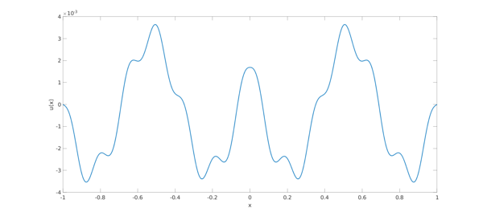
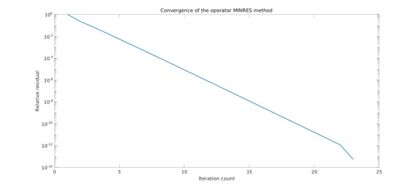
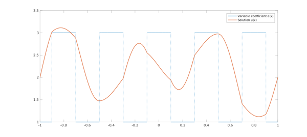

Krylov subspace methods
Krylov subspace methods are iterative solvers for linear systems $Ax = b$, which only require matrix-vector products with $A$ [4]. Computationally, they have low memory requirements and are widely used in applications throughout science and engineering. They usually work by computing an approximate solution to $$Ax = b $$ from a Krylov subspace of the form:
$$ \mathcal{K}_k(A,b) = \mbox{Span}\{b, Ab, A^2 b, \ldots, A^{k-1}b\}.$$
Three popular Krylov methods are: (1) The conjugate gradient (CG) method (for symmetric and positive definite matrices), (2) MINRES (for symmetric matrices), and (3) GMRES (for general matrices). Convergence analysis of these methods is typically difficult to fully characterize and has been an area of intense research activity [5].
Krylov subspace methods for differential equations
Krylov subspace methods are particularly popular in the context of solving linear systems constructed by discretizing differential equations [6]. The typical paradigm for solving an ordinary differential equation (ODE) is to first discretize it into a linear system $Ax = b$ and then use a Krylov subspace method to solve the resulting linear system. As an example, consider the second-order central finite difference discretization of $-u_{xx} = 1$ with $u(\pm 1) = 0$:
n = 100; h = 2/(n + 1); e = ones(n,1); A = -1/h.^2 * spdiags( [e -2*e e], -1:1, n, n ); b = ones(n, 1);
This finite difference discretization is structure-preserving in the sense that the operator $\mathcal{L}u=-u_{xx}$ is self-adjoint with positive eigenvalues and the discretization matrix $A$ is symmetric positive definite (SPD). Thanks to this property, the linear system $Ax = b$ may be solved using the conjugate gradient (CG) method. The following code calls the built-in MATLAB command for CG until the residual is below $10^{-12}$ or until 100 iterations have been performed.
x_cg = pcg(A, b, 1e-12, 100); x_exact = A \ b; error = norm( x_cg - x_exact )
pcg converged at iteration 50 to a solution with relative residual 1.3e-13.
error =
7.915691296375060e-15
Rectangular spectral collocation
In Chebfun, the default discretization of ODEs is rectangular spectral collocation [7]. The discretized linear system can be obtained with the following commands:
L = chebop( @(u) -diff(u, 2) ); L.bc = 0; A = matrix(L, n);
Unlike the finite difference discretization above, this discretization is not structure preserving in the sense that the matrix $A$ is not symmetric.
norm( A - A' ,'fro')
ans =
2.237739630806405e+07
As a consequence, CG cannot be employed to solve the resulting linear system and less efficient Krylov subspace methods such as GMRES must be employed instead. Alternatively, other spectral discretizations that are structure preserving could be used, such as the Legendre-Galerkin spectral method [1].
The Chebfun and Beyond conference in 2012
A discussion on the topic of operator Krylov methods for differential operators took place at the Chebfun and Beyond conference in September 2012, and was attended by about 100 numerical analysts. The session was chaired by Nick Higham and the discussion was scribed. It was agreed at the discussion that designing operator Krylov methods was at least an important conceptual development and, we believe, also of practical relevance in the context of spectral collocation methods.
Operator Krylov subspace methods for second-order BVPs
Recently, a collection of commands were added to Chebfun (pcg(), minres() and gmres()) for solving second-order boundary value problems (BVPs) with Dirichlet boundary conditions using operator analogues of Krylov methods. These methods avoid discretizing the differential operators, and instead solve BVPs by forming a Krylov subspace using operator-function products [2]. This example introduces these three commands.
Direct versus iterative solvers
In the matrix setting, Krylov subspace methods are most useful for solving large linear systems with fast matrix-vector products. Likewise, these operator Krylov methods are most useful when the solution requires a high degree polynomial to be resolved to machine precision. The following code solves an ODE whose solution requires a 3095 degree polynomial to be approximated to machine precision.
x = chebfun('x');
f = 1/(1+x.^2) ;
L = chebop( @(u) -diff((2+cos(70*pi*x)).*diff(u)) + (1+x.^12).*u );
L.lbc = 3; L.rbc = -5;
tic, u_colloc = L \ f; toc
tic, u_cg = pcg(L, f); toc
Elapsed time is 59.001027 seconds. Elapsed time is 3.860875 seconds.
Operator CG for self-adjoint differential operators with +ve eigenvalues
The operator CG method for ODEs can be used to solve a second-order BVP if the differential operator is self-adjoint with positive eigenvalues. The following code calls the operator CG method to solve the differential equation $-u_{xx} = 1$ with $u(\pm 1) = 0$:
L = chebop( @(u) -diff(u, 2) ); L.bc = 0; f = chebfun(1); u_cg = pcg(L, f); error = norm( u_cg - L\f ) % error in CG solution
error =
9.167763046714091e-15
To emphasize, this pcg() command does not discretize the differential operator and is not employing a matrix Krylov subspace. More details of the underlying algorithms are given in [2].
MINRES for self-adjoint differential operators
Analogous to matrices, if a differential operator $\mathcal{L}$ is second-order and self-adjoint, then an operator MINRES method can be used to solve the BVP. The differential operator
$$ \mathcal{L} u = -u_{xx} - 100 u $$
is self-adjoint and has both negative and positive eigenvalues, preventing the use of operator CG:
L = chebop(@(u) -diff(u, 2) - 100*u ); L.bc = 0; eigs( L )
ans = -77.793390097548880 -60.521582395635846 -38.314972493188108 -11.173560390204969 20.902653913343375 57.913670417433252
The following code calls the operator MINRES method to solve
$$ \mathcal{L} u = \sin (13 \pi |x|), \qquad u(\pm 1 ) = 0 $$
and plots the solution.
f = sin( 13*pi*abs( x ) );
u_minres = minres(L, f);
u_colloc = L \ f;
error = norm( u_minres - u_colloc )
% Plot:
plot(u_minres, 'linewidth', 2)
xlabel('x'), ylabel('u(x)')
set(gca, 'fontsize', 16)
error =
1.854028891156404e-15

GMRES for general differential operators
GMRES is a Krylov subspace method that can be used to solve any linear system $Ax = b$. Although it can always be used, GMRES is less efficient than CG and MINRES. Analogously, any second-order ODE with Dirichlet boundary conditions can be solved with the operator GMRES method. The following code solves the differential equation $-u_{xx} + u_{x} + u = 1$, $u(\pm 1 ) = 0$, using the operator GMRES method:
L = chebop( @(u) -diff(u, 2) + diff(u, 1) + u ); L.bc = 0; f = chebfun( 1 ); u_gmres = gmres(L, f); u_colloc = L \ f; error = norm( u_colloc - u_gmres )
error =
6.201753694227428e-15
Operator preconditioning
The convergence of Krylov subspace methods is tied to the conditioning of the operator. Since differential operators are unbounded, the solution of the discretization of differential equations often requires preconditioning. The operator Krylov methods we present use a built-in symmetric operator preconditioner [3]. That is, it applies our operator Krylov subspace method on the following preconditioned equation:
$$ \mathcal{R}^* \mathcal{L} \mathcal{R} v = \mathcal{R}^* f, \mathcal{R}v (\pm) 1 = 0 $$
The specific preconditioner used is the indefinite integration preconditioner:
$$ \mathcal{R} u = \int_{s=-1}^{s=x} u(s) ds.$$
This choice of preconditioner makes $\mathcal{R}^* \mathcal{L} \mathcal{R}$ a bounded operator. This built-in preconditioner means that one does not have to provide a preconditioner to obtain a solution to BVPs in a few iterations. The following code calls the operator MINRES method on a problem with variable coefficients, and plots the norm of the residual at each iteration:
L = chebop( @(u) -diff((2+cos(21*pi*x)).*diff(u,1),1) + u./(1+x.^2) ); L.bc = 0; u_exact = sin(40*pi*x); f = L(u_exact); [u_minres, flag, relres, iter, resvec] = minres(L, f); error = norm( u_exact - u_minres) % Plot: semilogy( resvec./resvec(1), 'linewidth', 2 ) xlabel( 'Iteration count' ), ylabel( 'Relative residual' ) title( 'Convergence of the operator MINRES method' ) set(gca, 'fontsize', 16)
error =
3.157980694280705e-13

No preconditioner can be effective for all problems. Since only the integration preconditioner is supported in our operator Krylov methods, they can display poor convergence in some cases. For example, the preconditioner is ineffective for the singularly perturbed equation $-\epsilon u_{xx} + u = 1$ with $u(\pm 1) = 0$. The following code calls the operator CG method on this equation with $\epsilon = 10^{-5}$, and requires 446 iterations to converge to an accuracy of $10^{-13}$.
L = chebop( @(u) -1e-5.*diff(u,2) + u ); L.bc = 0; f = chebfun( 1 ); [u_minres, flag, relres, iter] = pcg(L, f, 1e-13, 1000) u_colloc = L \ f; error = norm( u_minres - u_colloc )
Warning: The tolerance is probably too small.
u_minres =
chebfun column (1 smooth piece)
interval length endpoint values
[ -1, 1] 139 7.1e-16 -4.1e-12
vertical scale = 1
flag =
3
relres =
8.891826103520412e-15
iter =
456
error =
6.841972651612034e-13
Piecewise smooth solutions
These operator Krylov methods are formulated at the continuous level and therefore are independent of the underlying discretization of functions that is employed. As a result, the same methods work for ODEs with piecewise smooth coefficients. The following code solves an ODE with discontinuous coefficients using the operator MINRES method:
a = chebfun(2 + sign(cos(5*x*pi)), 'splitting', 'on');
c = chebfun(-abs(x), 'splitting', 'on');
L = chebop( @(u) -diff(a.*diff(u)) + c.*u );
L.bc = 2;
f = -1e2*sin(3*pi*x);
u_minres = minres(L, f);
relative_residual = norm( L(u_minres) - f )/norm(f)
plot(a, 'linewidth', 2), hold on
plot(u_minres, 'linewidth', 2)
legend('Variable coefficient a(x)', 'Solution u(x)')
set(gca, 'fontsize', 16)
relative_residual =
4.095871962535807e-12

References
[1] T. A. Driscoll and N. Hale, Rectangular spectral collocation. IMA J. Numer. Anal., 36.1, 108-132, 2015.
[2] M. A. Gilles and A. Townsend, Continuous analogues of Krylov methods for differential operators. arXiv preprint arXiv:1803.11049, 2018
[3] R. Hiptmair, Operator preconditioning. Comput. Math. Appl., 52.5, 699-706, 2006.
[4] J. Liesen and Z. Strakoš, Krylov Subspace Methods: Principles and Analysis. Oxford University Press, 2013.
[5] J. Liesen and P. Tichy, Convergence analysis of Krylov subspace methods, GAMM Mitteilungen, 27 (2004), pp. 153-173.
[6] J. Málek and Z. Strakoš, Preconditioning and the Conjugate Gradient Method in the Context of Solving PDEs. SIAM, 2014.
[7] J. Shen, Efficient spectral-Galerkin method I. Direct solvers of second-and fourth-order equations using Legendre polynomials. SIAM J. Sci. Comput., 15.6, 1489-1505, 1994.